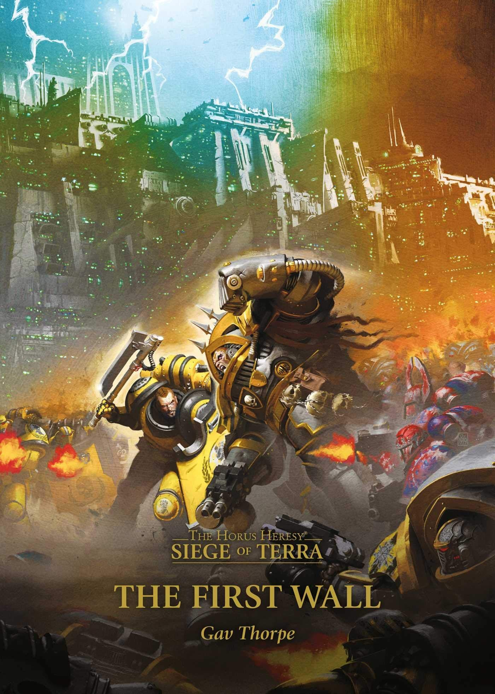

THE FIRST WALL

Author: Gav Thorpe
Format: Novel
The outer defences have fallen, and Horus's armies advance on the Palace. Perturabo and his Iron Warriors must take the Lion's Gate space port to bring their heaviest weapons to Terra, while Rogal Dorn tries to hold the walls.
Introduction reviewed against Black Library’s description on 2026-09-27. The publisher page may contain spoilers.
Publication facts: publisher source, checked 2026-09-26.
Open this work in the interactive Archive to track reading progress and explore related works.